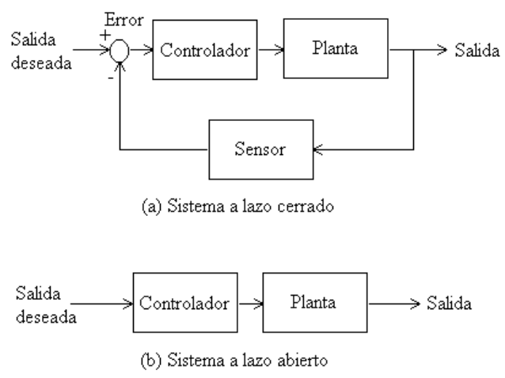

Características de la realimentación#
Concepto#
El control realimentado o a lazo cerrado tiene la característica de que medimos la salida y luego la comparamos con un valor deseado. El error resultante lo utilizamos para corregir la salida del sistema.
{kind=link}

Lazo cerrado versus lazo abierto#
En la figura anterior mostramos los diagramas de bloques genéricos de los sistemas de control a lazo cerrado (con realimentación) y a lazo abierto (sin realimentación).
Ejemplo#
Seguimiento de referencia#
Las ecuaciones que gobiernan el motor de corriente continua las podemos escribir en forma simplificada de la siguiente manera:
donde:
\(\omega\): es la velocidad del rotor (salida del sistema).
\(V_a\): es la tensión aplicada al motor (entrada a la planta).
\(T_l\): es la carga sobre el motor.
\(\tau\): es la constante de tiempo.
\(K_0\) y \(K_l\): constantes.
Realicemos una comparación de colocar un controlador a lazo abierto y otro a lazo cerrado (con realimentación unitaria).
Análisis del lazo abierto para seguimiento a referencias#
La ganancia de nuestro controlador (\(K_{co}\)), será tal que \(V_a = K_{co}\omega_d\). Realizando pruebas, podemos determinar que \(K_{co}\) es \(1/K_0\); de este modo, para el estado estacionario sin carga (\(T_l = 0\)), la salida será:
Análisis del lazo cerrado para seguimiento a referencias#
Para lazo cerrado tenemos que \(V_a = K_{cc}(\omega_d - \omega)\), donde \(K_{cc}\) es la ganancia del nuevo controlador a lazo cerrado. Utilizando la primera ecuación, obtenemos:
y en el estado estacionario:
Conclusión
Entonces, si se selecciona \(K_{cc}\) de manera que \(K_0K_{cc} >> 1\), tenemos que \(\omega \approx \omega_d\).
Como vemos del ejemplo en lazo abierto la salida es exactamente la referencia deseada \((\omega = \omega_d)\) y en lazo cerrado es aproximado \((\omega \approx \omega_d)\), pero debemos tener en cuenta que para el caso del sistema a lazo abierto necesitamos conocer exactamente el valor de \(K_0\) para determinar la ganancia del controlador \(K_{co}\), cosa que no es necesaria para el caso del sistema a lazo cerrado.
Perturbaciones#
Una perturbación es una entrada adicional a nuestra planta, que afecta a la salida de nuestra planta.
En debajo mostramos los diagramas de bloques de sistemas a lazo abierto y cerrado, con perturbaciones w. Analicemos como afectan a la salida dichas perturbaciones.
Análisis del lazo abierto frente a perturbaciones#
La salida y1 debido a una perturbación w, será:
De la misma podemos deducir que el diseñador no puede influir con su compensador para reducir los efectos de las perturbaciones.
Análisis del lazo cerrado frente a perturbaciones#
La salida \(y_2\) debido a una perturbación \(\Omega\), será:
Por lo tanto, aquí el diseñador puede elegir un compensador \(D\), de módulo grande, de manera de reducir el efecto de la perturbación sobre la salida.
Cabe observar aquí que para los sistemas realimentados debemos escoger un muy buen sensor.
Análisis frente al ruido#
Analicemos como influye en la salida \(y_2\) un ruido \(v\) en el sensor. La salida será:
Por lo tanto el diseñador no tiene forma de reducir el efecto del ruido sin afectar directamente la función de transferencia desde la referencia de entrada a la salida.
Perturbación \(T_l\)#
Observemos ahora cómo influye una carga perturbadora \(T_l\) sobre la velocidad en el sistema de nuestro ejemplo.
Ejemplo: Análisis de perturbación a lazo abierto#
En estado estacionario tenemos:
Utilizando \(K_{co} = \frac{1}/{K_0}\)
Entonces la variación de velocidad debida a la carga es:
Por lo tanto, el error de velocidad es proporcional a la carga perturbadora (y el diseñador no puede influir en los parámetros \(K_l\) y \(K_0\)).
Ejemplo: Análisis de la perturbación a lazo cerrado#
La velocidad en estado estacionario, para lazo cerrado, es:
El diseñador puede tomar un \(K_{cc}\) de modo que \(K_0K_{cc} >> 1\) y \(K_0 K_{cc} >> K_0 K_l\), no resultará en un error significativo con o sin torsión de carga perturbadora.
Conclusión
Los errores del sistema son menos sensibles a las perturbaciones en los sistemas de lazo cerrado que en los sistemas a lazo abierto.
Otra característica de los sistemas realimentados es que la velocidad de respuesta se puede mejorar con respecto a su sistema a lazo abierto (cuidado: sistemas con más polos afecta la estabilidad del sistema; menos amortiguados y hasta inestables).